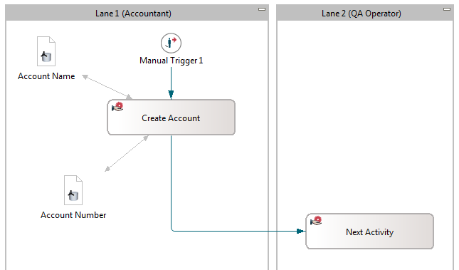
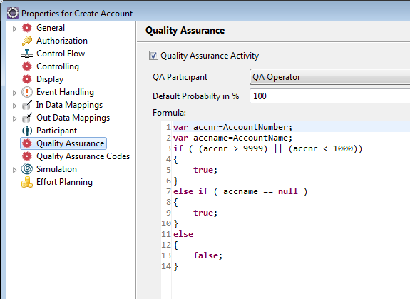
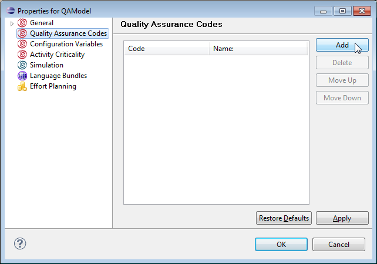
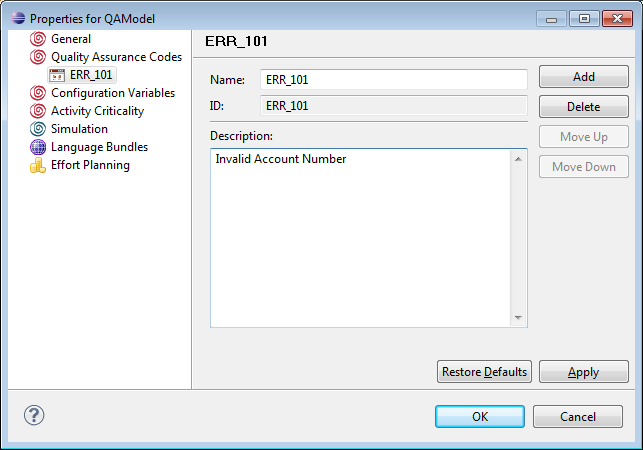
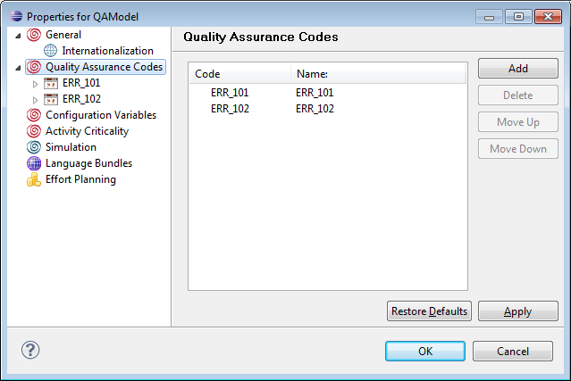
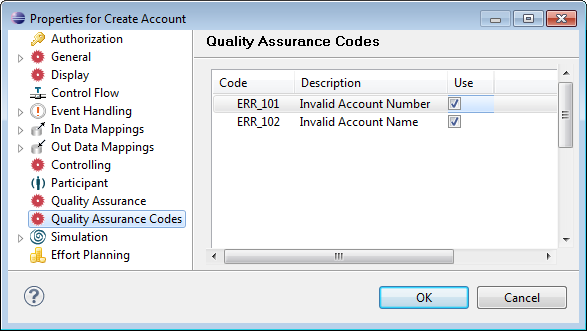

Creating the QA Example Model in the Eclipse Modeler
To create our example QAModel in the Eclipse modeler,
proceed as follows:
Creating the Workflow
First create the workflow of the model:
- Create a new model, e.g. QAModel.
- Create a process definition (or rename the default process definition)
called QAUseFormula.
- Open the process definition diagram.
- Create a manual trigger followed by a manual activity, e.g.
Create Account.
- Create a subsequent manual activity, e.g.
Next Activity.
- Create two roles Account and QA Operator.
- Make role Account the performer of
the manual trigger and Create Account.
- Make role QA Operator the performer of
activity Next Activity.
- You can set the performers via the Connect option in the diagram
or by using two different lanes when working in BPMN drawing mode.
- Create the following two primitive data:
- Account Number of type int
- Account Name of type String
- Create In- and Out-data-mappings for both data to activity
Create Account.
The workflow should now look like in the following diagram:

Figure: Diagram with created workflow.
Setting Quality Assurance Criteria
Now set the criteria for quality assurance in the property page of
activity Create Account:
- Select Quality Assurance in the left pane of the
property page.
- In the Quality Assurance pane, choose role
QA Operator from the drop-down list as quality assurance
operator.
- Leave the probability value as 100%.
- Enter the following formula:
var accnr=AccountNumber;
var accname=AccountName;
if ( (accnr > 9999) || (accnr < 1000))
{
true;
}
else if ( accname == null )
{
true;
}
else
{
false;
}
- Click Apply to apply the criteria.

Figure: Quality Assurance Criteria
Setting Quality Assurance Codes
Now we set quality assurance codes that can be used to be added as notes
when a quality assurance on an activity instance fails. These can be set in the
model property page:
- Open the model property page.
- Select Quality Assurance Codes in the left pane.
- Click Add to add a new code.

- Enter the following two error codes:
- ERR_101 with description Invalid Account Number

- And in the same way ERR_102 - for an Invalid Account Name
The error codes are now listed in the Quality Assurance Codes tree:

Figure: New Error Codes listed in the tree
Now mark in the activity that these codes should be used:
- Open the property page of activity Create
Account.
- Select Quality Assurance Codes in the left
pane.
- In the Quality Assurance Codes section,
select the two error codes for the account.
- Apply the selection.

Figure: Select error codes to be used.